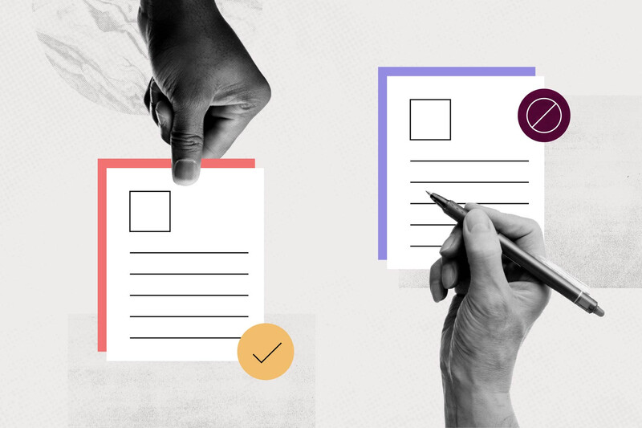

UTILIZA RECURSOS DIGITALES Y MULTIMEDIA PARA EL DESARROLLO DE SUS ACTIVIDADES DE APRENDIZAJE
El uso de recursos digitales y multimedia en el ámbito educativo ofrece múltiples beneficios para el aprendizaje. Aquí te presento algunos de ellos:
- a) Acceso a información actualizada: Permiten acceder a información actualizada y variada en diferentes formatos, como textos, videos, imágenes y presentaciones.
- b) Estimulación de múltiples sentidos: El uso de recursos multimedia, como videos y gráficos interactivos, estimula los sentidos de los estudiantes y facilita la comprensión de conceptos complejos.
- c) Personalización del aprendizaje: A través de actividades interactivas, ejercicios personalizados y retroalimentación inmediata, se puede proporcionar un aprendizaje más individualizado.
- d) Colaboración y participación: Herramientas en línea, como foros de discusión, blogs y plataformas de colaboración, los estudiantes pueden interactuar entre sí y con sus profesores, promoviendo un ambiente de aprendizaje activo y colaborativo.
- e) Desarrollo de habilidades digitales: Los estudiantes aprenden a utilizar diferentes herramientas y plataformas, mejorando su competencia digital.
INCLUYE RECURSOS TICCAD EN SU SITIO WEB
En línea general, los recursos TICCAD (Tecnologías de la Información y Comunicación para el Aprendizaje Digital)
se refieren a herramientas y aplicaciones digitales que se utilizan para fortalecer el proceso de enseñanza y
aprendizaje a través de la tecnología. Estos recursos pueden incluir programas interactivos, simulaciones,
plataformas en línea, entre otros, que permiten a los estudiantes adquirir conocimientos y habilidades de manera interactiva y dinámica.
Genera una propuesta de innovación bajo las TICCAD

Las TICCAD, siglas de Tecnologías de la Información, Comunicación, Arte y Diseño, se refiere a la integración de estas disciplinas en procesos de innovación y desarrollo. En este contexto, generar una propuesta de innovación bajo las TICCAD implica utilizar estas tecnologías para resolver problemas o generar soluciones creativas y disruptivas.
Para generar una propuesta de innovación bajo las TICCAD, puedes considerar los siguientes pasos:
- Identifica las necesidades: Analiza cuáles son las necesidades educativas que deseas abordar con la propuesta. Pueden ser problemas de aprendizaje, falta de acceso a recursos, entre otros.
- Define los objetivos: Establece los objetivos específicos que deseas lograr con la propuesta. ¿Qué cambios o mejoras esperas obtener?
-
- Investigación: Realiza una investigación sobre las tecnologías y herramientas disponibles que se adapten a tus objetivos. Puedes considerar el uso de plataformas en línea, aplicaciones móviles, software educativo, entre otros.
Diseño de la propuesta: Basándote en la investigación, diseña la propuesta de innovación. Define como se utilizarán las TICCAD para abordar las necesidades identificadas y alcanzar los objetivos establecidos.
- Implementación y evaluación: Lleva a cabo la implementación de la propuesta en el entorno educativo. A medida que se lleve a cabo, evalúa periódicamente su efectividad y realiza los ajustes necesarios.